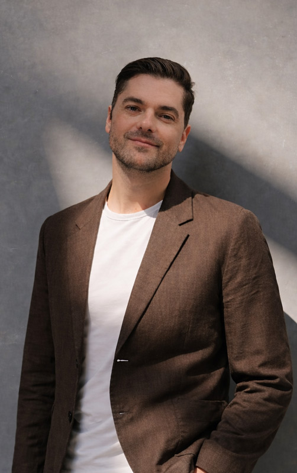
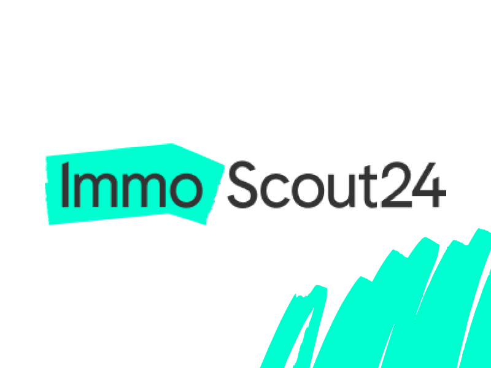
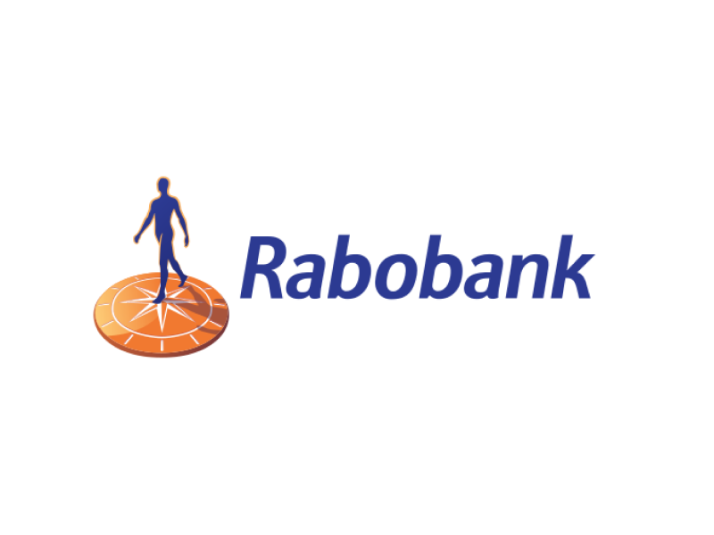
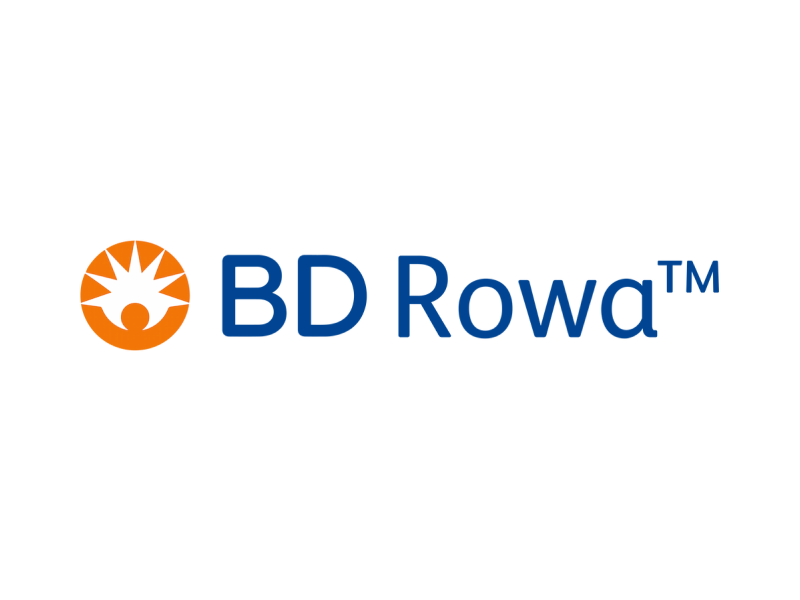
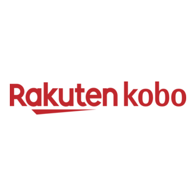
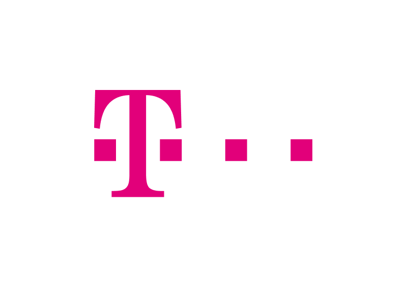

AI Expert, Design System Specialist, Coffee Enthusiast, and UX Mentor — based in Zurich.
I'm Louis, I grew up in Alicante, Spain where I did my international baccalaureate (IGCSE). Shortly after, I moved to Barcelona to study communication design and media psychology at Elisava University.
After graduating, I moved to Germany where I started working at different agencies. While I first started as a digital art director, I moved fully into user experience in 2013. In the years to come, I deep-dived into all aspects of UX, continuously learning and experimenting with a wide range of methods, tools, and technologies.
In 2017, I worked closely with universities in Barcelona and Amsterdam to develop a fast-learning program for graduates aiming to become product designers. In 2019, I launched the UX Academy with the agency Cocomore in Frankfurt to onboard students into their first real-world work experience.
Over the last years, I have strongly expanded my skill set around applied AI in design and product development. Today I work as an AI Expert and Design System Specialist in Zurich, Switzerland. I build and scale design systems with the support of AI, using it to accelerate pattern creation, documentation, governance, and consistency across products. I integrate AI into design and discovery processes to improve research synthesis, ideation, prototyping, and decision-making, without losing human judgment or critical thinking.
I also help leadership teams shape AI business strategy—assessing AI readiness, evaluating tools and platforms, and turning emerging technology into a realistic roadmap rather than a wishlist. My clients range from startups to enterprises across Switzerland and Europe, including Immoscout24, Rabobank, Deutsche Telekom, BD Rowa, and Rakuten Kobo.
I also work at the organizational level, helping multidisciplinary teams adopt AI in a pragmatic and responsible way. This includes redefining workflows, enabling designers, researchers, and product teams to collaborate more efficiently, and identifying where AI creates real leverage versus where it adds noise.
My focus is always on augmentation, not automation for its own sake: freeing teams from repetitive work so they can focus on strategy, creativity, and human insight.
In a nutshell: I have a multidisciplinary skill set that integrates creative knowledge with technical and business expertise. I master the most current design tools in the industry and combine them with a strong understanding of human nature and behavior. I am a critical thinker with an open mind, a communicator, a facilitator—and someone who knows how to turn emerging technologies like AI into concrete, usable value for teams and organizations.

Case Studies
Swiss Marketplace Group
Creating a multibrand whitelabel design system to consolidate ImmoScout24, Homegate, and Flatfox into one scalable real-estate platform.
View Case Study →
Immoscout24
Redesigning the property listing funnel for Germany's leading real estate platform. Improved user conversion and streamlined the search experience for millions of users.
View Case Study →
Rabobank
Designing a modern banking app for the German and Belgian markets. Led the UX strategy and design system implementation for a seamless digital banking experience.
View Case Study →
BD Rowa
Website relaunch for pharmacy automation systems. Created an intuitive digital presence showcasing complex medical technology solutions to healthcare professionals.
View Case Study →
Rakuten Kobo
Merging two digital reading platforms into a unified experience. Developed a comprehensive design system and improved accessibility for visually impaired users.
View Case Study →
Deutsche Telekom
Creating the smartest home of all times with the Magenta Smart Home app. Led the complete UX revamp for smart home device management and automation.
View Case Study →Let's Work Together
If you think that I'm a good match for your project then drop me a line! We're better together.
Get in Touch!